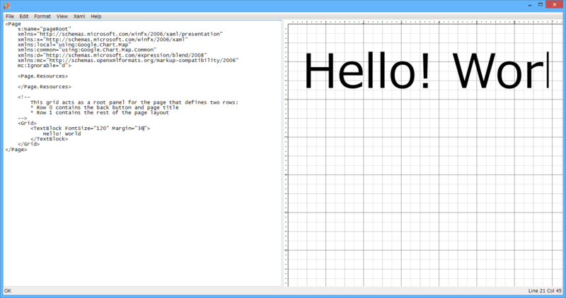
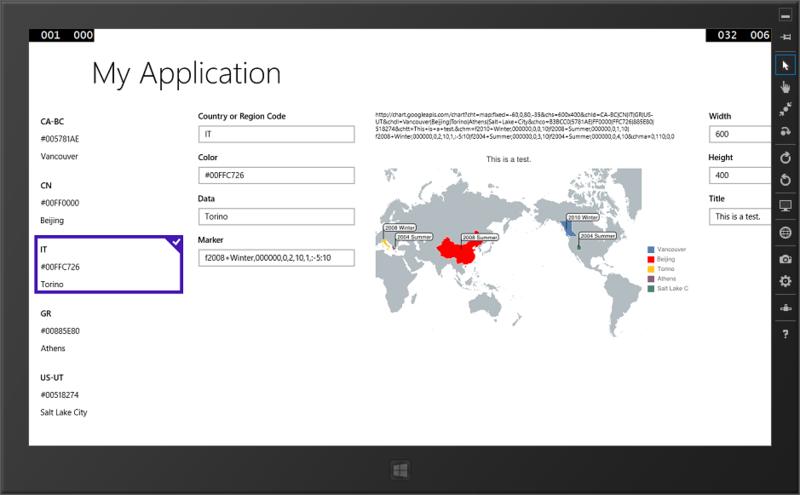

『プログラミングWindows 第6版 上 ~C#とXAMLによるWindowsストアアプリ開発』
公開日：
")
プログラミングWindows 第6版 上 ~C#とXAMLによるWindowsストアアプリ開発 (プログラミングシリーズ)
- 作者: Charles Petzold,(株)クイープ
- 出版社/メーカー: 日経BP社
- 発売日: 2013/09/20
- メディア: 単行本（ソフトカバー）
- この商品を含むブログを見る
2013流行語アプリ選手権＆総選挙 by ＠IT Windowsタブレット向けアプリ開発 - ＠IT の参加表明をしたらもらえた。下巻は自分で買おう……。
午前中、布団の上でゴロゴロしながら目を通したのだけど、割と懇切丁寧でいいなぁ、と思った。基礎の基礎に関してはすでに知っていたこともあり、第二章まではペロッと読めたのだけど、それでもところどころ「あ、そういうことなんだ」と腑に落ちたところもあった。「こう書いてもいいんだよ」「これがダメなのはこういう意味だから」というのが書かれていると、単に覚えるのじゃなくて、「理解」できる気がする。
そのあとはパラパラと目を通しただけだけど、第8章の「XAML Cruncher」なんかのサンプルは勉強になりそう。

WPF 版は Petzold Book Blog - Introducing XAML Cruncher 2.0 からダウンロード可能。左のコード画面に書いた XAML が解析され、右側のデザイン画面に描画される。
最後の方に Windows 8.1 の内容が盛り込まれていて助かる。CommandBar なんかはすでに知ってたけど（これ、割と便利だった）、全部これに移行させたいと思う。ただ、Windows 8.0 ベースの記述のところに Snap なんかの説明もあるのかな？ そこあたりはすでに古くなっているかもしれないので、適宜最新情報を参照しながら読んでいきたいですね。索引は日本版独自なのかな？ グッジョブ。
あと、本の内容にも関係ないけど、ゴロゴロと本を読んでいて気付いた。MSDN ライブラリの内容は充実しているけれど、歴史書で言えばあれ、“紀伝体”なんだな。で、こういう本は“編年体”。流れをつかめている人だったら MSDN ライブラリだけでいいんだろうけれど、わしみたいに困ったときになって初めて MSDN ライブラリを引くような人間にとっては、誰かがまとめてくれた“流れ”がすんごい役に立つ。知識というものは、体系になって初めて知識なのでござるな。
まぁ、何をいまさらお前は言ってんだって話だけど。それよりアプリ作れ、自分。

一応二つぐらい作ってて、完成したほうを提出しようと思っているが、なかなかうまくいかない感じで。